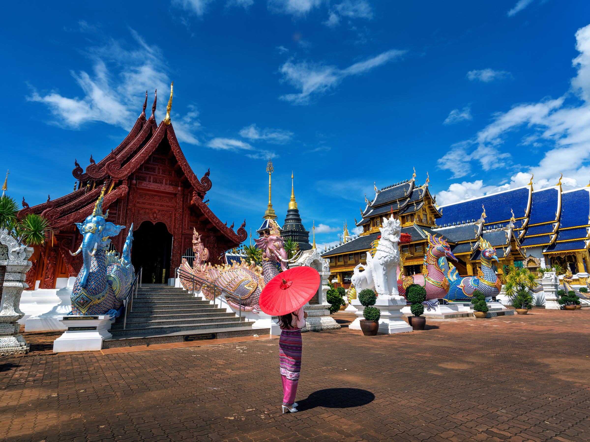
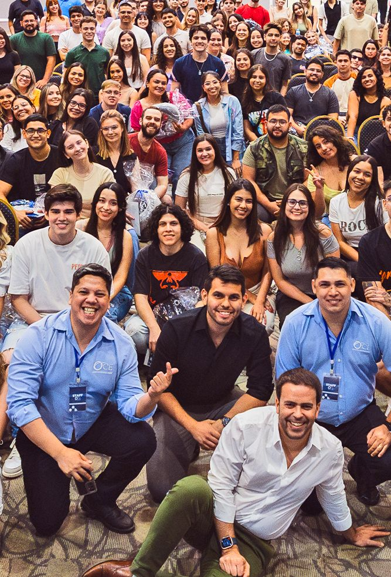
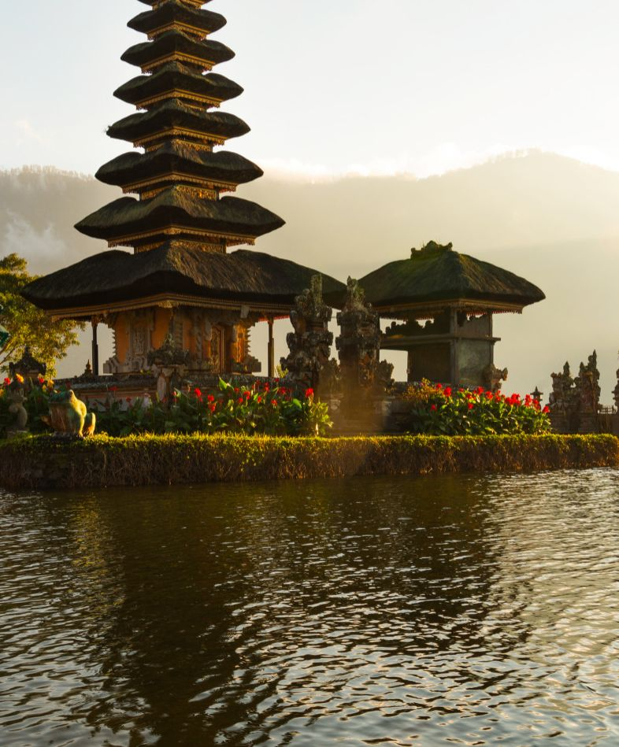
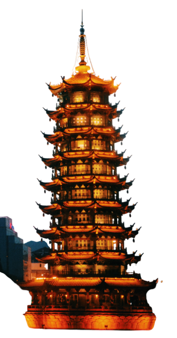

Work &
Travel
Asia
Experiencia laboral y cultural que te permite trabajar y viajar por el continente asiático. El programa ideal para quienes buscan salir de lo tradicional y sumergirse en culturas completamente nuevas, con un enfoque en la inmersión lingüística y la exploración de paisajes exóticos.
Duración del programa:
WORK AND TRAVEL ASIA:
El programa puede durar de 2 a 5 meses y hay 2 temporadas. Winter season: Diciembre a marzo. Summer season: Junio a septiembre.
HOSPITALITY AND BUSINESS INTERNSHIP ASIA: Cualquier temporada del año, tiene una duración de 6 a 12 meses.
MANAGEMENT TRAINING: Cualquier temporada del año, puede durar de 12 a 24 meses.

Países
- Indonesia
- Malasia
- Emiratos Árabes Unidos
- Qatar
- Maldivas
- Tailandia
- Vietnam
El intercambio cultural a Asia cuenta con TRES PROGRAMAS a los que podés aplicar
- Work and Travel Asia: Es un programa para estudiantes universitarios que desean expandir sus experiencias a una nueva cultura.
- Hospitality and Business Internship Asia: Para estudiantes o recién graduados que desean ganar experiencia en su área de estudio.
- Management Training: Se centra en la formación a nivel profesional de graduados con experiencias laborales previas en el área de trabajo.

Work and Travel Asia
- Mayores de 18 años
- Solo estudiantes de carreras universitarias
- Nivel intermedio de inglés Sin antecedentes policiales
Hospitality and business internship Asia
- Mayores de 18 años
- Estudiantes de carreras universitarias o recién graduados dentro de un período de 24 meses
- Nivel intermedio a avanzado de inglés
- Sin antecedentes policiales
Management training Asia
- Estudiantes de Licenciatura, Posgrados y Másteres
- Recién graduados dentro de un período de 36 meses
- Un mínimo de 12 meses de experiencia en el área de trabajo
- La licenciatura debe estar relacionada con el puesto de trabajo
- Aprobación por la universidad Inglés intermedio/alto
- Sin antecedentes policiales
Cada programa incluye
- Contrato de trabajo
- Asistencia en el proceso de visado
- Soporte durante la estadía Vivienda y comodidades
- Alimentación en horario laboral
- Seguro Médico
- Uniforme e instalaciones de lavandería
- Beneficios adicionales por el empleador
Algunos trabajos
disponibles
- Servicio de Alimentación y bebidas, Recepción y servicio al cliente, Arte Culinario, Ventas y Marketing.
- Administración, Ayudante de cocina, Departamento de Limpieza, Recursos Humanos.
